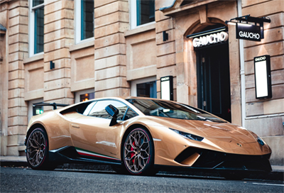

Responsive Web Project
Designed by Kang Keon Woo
Personal Work 100%
Adobe Photoshop
About
바쉐론 콘스탄틴은 스위스의 하이엔드 명품 시계 브랜드이다.
시계에 관심이 많아 시계 브랜드 홈페이지를
만들어 보고 싶어서 반응형 홈페이지를 제작하였다.
Design Concept
-
세련된
-

고급스러운
-
특별한
Color

Typography
- 나눔스퀘어 NanumSquare
-
가능한 한 더욱 잘하라, 그것은 언제나 가능하다.
Faire mieux si possible, ce qui est toujours possible.